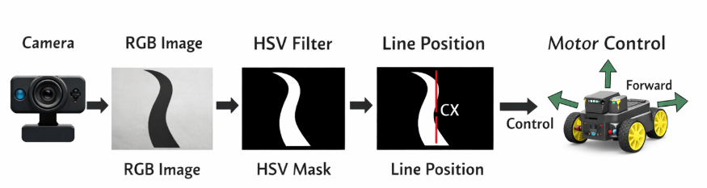
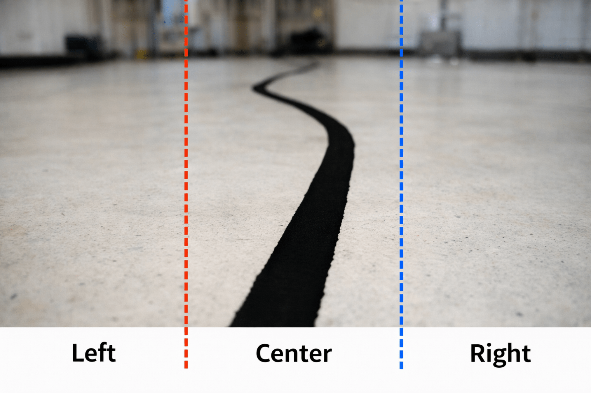
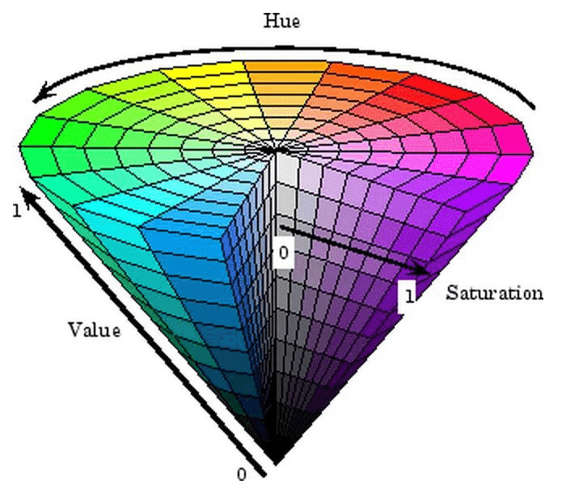

HSV Camera Robotic
ICT 361: Introduction to Robotics

Mr. Seng Theara
Learning Objective
By the end of the lesson, student will be able to:
-
Understand how a joystick works electrically
-
Explain pull-up button logic
-
Read analog and digital signals
-
Map controller inputs to robot movements
-
Design basic control logic for robots
Learning Objective
By the end of the lesson, student will be able to:
- Explain the HSV color model and its advantage over RGB
- Describe how a camera can replace manual control
- Convert camera image to HSV using OpenCV
- Apply thresholding to detect a line
- Generate a binary mask from the image
- Calculate line position (cx) from the mask
4 Buttons
Joystick
Big Picture
Joystick
Big Picture

Joystick
ROI (Region of Interest)

Joystick
ROI (Region of Interest)
ROI helps the robot focus only on what matters.
In this image, the ROI is divided into three regions:
Left | Center | Right
- If the black line is in the center → the robot moves straight
- If the black line is in the left → the robot turns left
- If the black line is in the right → the robot turns right
Goal: Keep the line in the center region
4 Buttons
Joystick
What is a HSV?
4 Buttons
What is a HSV?
HSV (Hue, Saturation, Value) is like a color wheel + brightness control

1. Hue (H) represent the type of color and measure in degree
Example:
- 0° → Red
- 60° → Yellow
- 120° → Green
- 240° → Blue
2. Saturation (S) represent controls color intensity
| Value | Meaning |
|---|---|
| 0 | Gray |
| 255 | Full Color |
4 Buttons
3. Value (V) represent the brightness
| Value | Meaning |
|---|---|
| 0 | Black |
| 255 | Bright |
- HSV separates color from brightness. That means even if lighting changes, we can still detect the object
- We are not detecting black by color. we are detecting it by LOW brightness.
Black line Detection
A black line has
- No color → Saturation (S) ≈ 0
- No light → Value (V) ≈ 0
HSV Threshold
Lower = (0, 0, 0)
Upper = (180, 255, 80)
1. Hue (H)
We set H value range between 0 to 180 because we don't care about the color. Black has no color
2. Saturation (S)
We set S in the range between 0 to 255. All saturation value allowed because black already has low S but lighting noise may change S slightly
3. Value (V)
V is the most important which decide only the dark pixels are selected. We set V in the range of value between 0 to 80.
- We set V in the range of value between 0 to 80 because if we do 50, the camera can miss the black line and if we do 150 it can detect other color as the black line as well.
Compare Different Objects
| Object | H | S | V | Why |
|---|---|---|---|---|
| black | Any | Low | Low | No light |
| white | Any | Low | High | Bright |
| Gray | Any | Low | Medium | Medium Brightness |
| Red | Low | High | High | Strong Color |
- You must tune the HSV value because it is related to the condition of where the robot is used
For example
- Bright room set V to 60
- Normal light set V to 80
- Dark room you might set it to 100
Camera Image (RGB) to HSV
when you do
frame = cap.read()The image from the camera is BGR Format because of the openCV library.
- We cannot use BGR to detect the black line directly because of some reason
- when the light changes the BGR values change a lot
- When there is shadow, the color become confusing
- The BGR is hard to isolate the object
- That is why the solution is convert it to HSV through the code below
hsv = cv2.cvtColor(frame, cv2.COLOR_BGR2HSV)Code for the black line detection with ROI
from flask import Flask, Response
import cv2
import numpy as np
app = Flask(__name__)
cap = cv2.VideoCapture(0)
cap.set(3, 640)
cap.set(4, 480)
def get_mask(roi):
hsv = cv2.cvtColor(roi, cv2.COLOR_BGR2HSV)
lower = (0, 0, 0)
upper = (180, 255, 80)
mask = cv2.inRange(hsv, lower, upper)
return mask
def generate_frames():
while True:
ret, frame = cap.read()
if not ret:
break
h, w = frame.shape[:2]
top = int(0.6 * h)
roi = frame[top:h, :]
mask = get_mask(roi)
M = cv2.moments(mask)
decision = "NO LINE"
if M["m00"] > 0:
cx = int(M["m10"] / M["m00"])
cv2.circle(roi, (cx, 50), 8, (0, 0, 255), -1)
# =========================
# 4. Decision
# =========================
if cx < w // 3:
decision = "LEFT"
elif cx > 2 * w // 3:
decision = "RIGHT"
else:
decision = "FORWARD"
cv2.rectangle(frame, (0, top), (w, h), (0, 255, 0), 2)
cv2.line(frame, (w//3, top), (w//3, h), (0, 0, 255), 2)
cv2.line(frame, (2*w//3, top), (2*w//3, h), (255, 0, 0), 2)
cv2.putText(frame, decision, (10, 40),
cv2.FONT_HERSHEY_SIMPLEX, 1, (0,255,0), 2)
# =========================
# 6. Send to web
# =========================
_, buffer = cv2.imencode('.jpg', frame)
frame_bytes = buffer.tobytes()
yield (b'--frame\r\n'
b'Content-Type: image/jpeg\r\n\r\n' + frame_bytes + b'\r\n')
@app.route('/')
def video():
return Response(generate_frames(),
mimetype='multipart/x-mixed-replace; boundary=frame')
if __name__ == "__main__":
app.run(host='0.0.0.0', port=5000)